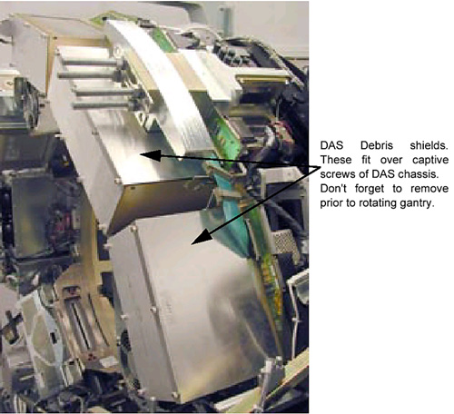

Operating Documentation
Direction 5196839-800, Rev# 6
Operating Documentation |
| IMPACT HAZARD. | |
| FAILURE TO TORQUE TRIM WEIGHT FASTENING HARDWARE WILL RESULT IN DAMAGING PROJECTILE EVENTS THAT WILL RESULT IN SEVERE EQUIPMENT DAMAGE AND POSSIBLE PERSONAL INJURY. | |
| Torque all fasteners to proper levels. |
| Use the DAS Debris Shields to prevent metal shavings from contaminating
the DAS Chassis. These shields can be used with the DAS fans running. Remove
debris shields before rotating the gantry. Refer to the following illustration:  | |
“Stacking Order” of balance weights is critical.
| ||
Review the information in the Safety Section, above.
Position the table to its lowest position.
Remove the gantry side, top, front and rear covers.
Launch the Service Gantry Balance program from the Service Desktop, Replacement Procedures tab.
Select Run to start the gantry balance procedure.
If the sensitivity matrix does not exist or the gantry is out of balance, the program will ask you to enter the current weight configuration prior to performing the steps to generate a new sensitivity matrix. See Illustration 4 for example of entries for 107° weight stack. The 180° weight stack appears in the same manner.
Follow the steps as stated in the “Result” portion of the GUI screen as you proceed through the Gantry Balance procedure. Those steps will not be included here as they may change from release to release of the product.
When the Gantry Balance procedure indicates a passing result save the updated configuration information and exit the program.
| IMPACT HAZARD. | |
| FAILURE TO TORQUE TRIM WEIGHT FASTENING HARDWARE WILL RESULT IN DAMAGING PROJECTILE EVENTS THAT WILL RESULT IN SEVERE EQUIPMENT DAMAGE AND POSSIBLE PERSONAL INJURY. | |
| Torque all fasteners to proper levels. |
Make sure to torque all fasteners as instructed. Use the Torque wrench ordered from the tool depot to tighten the nuts on the threaded rods using the following process. This torque wrench is a 1/2” drive necessary for the deep well socket and is capable of 250 lb-ft (339 N-m, 3,457Kg-cm)
First tighten all nuts to 50% of the full torque value, which is shown in Table 2. This will insure all nuts are all uniformly tight prior to applying final torque.
After all bolts are torqued to the initial value, torque all to the final torque value shown in Table 3:
Assemble gantry and perform FASTCAL. Ensure no pop-up windows occur and gesyslog is error free.